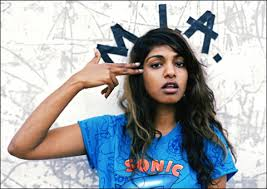

M.I.A.,is a British recording artist. She is also a songwriter, painter and director. Her compositions combine elements of alternative, dance, electronic, hip hop, and world music. M.I.A. began her career in 2000 as a visual artist, filmmaker and designer in west London before beginning her recording career in 2002.
| Album Year | Album Title |
|---|---|
| 2005 | Arular |
| 2007 | Kala |
| 2010 | Maya |
| 2013 | Matangi |